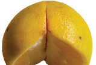
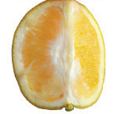

Chungwa limegawanywa katika vipande vitatu vinavyolingana.


Kipande kimoja cha chungwa kimeondolewa.
Kipande kilichoondolewa ni theluthi moja ya chungwa.

Theluthi moja,
Kipande kinachobaki ni theluthi mbili ya chungwa.

Theluthi mbili,